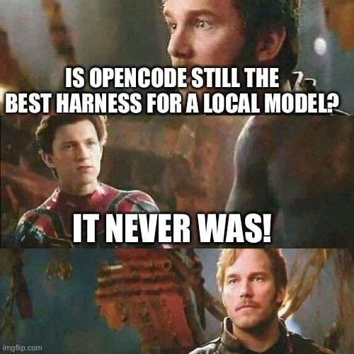
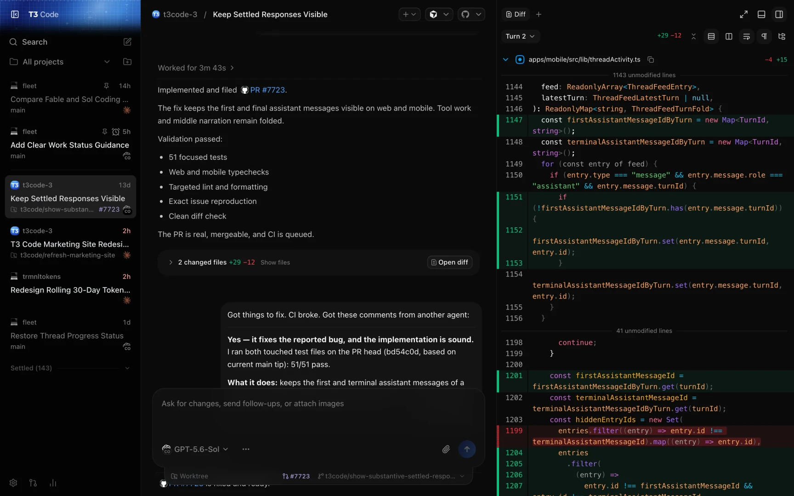
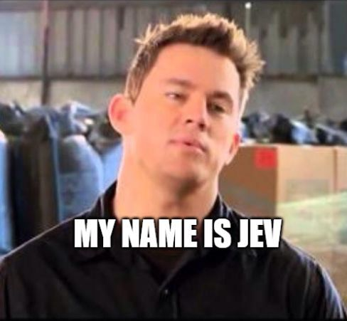
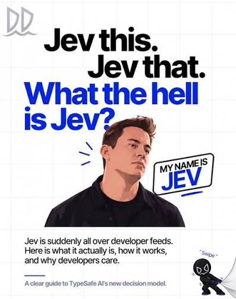
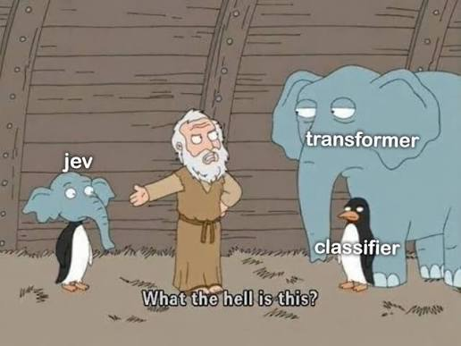
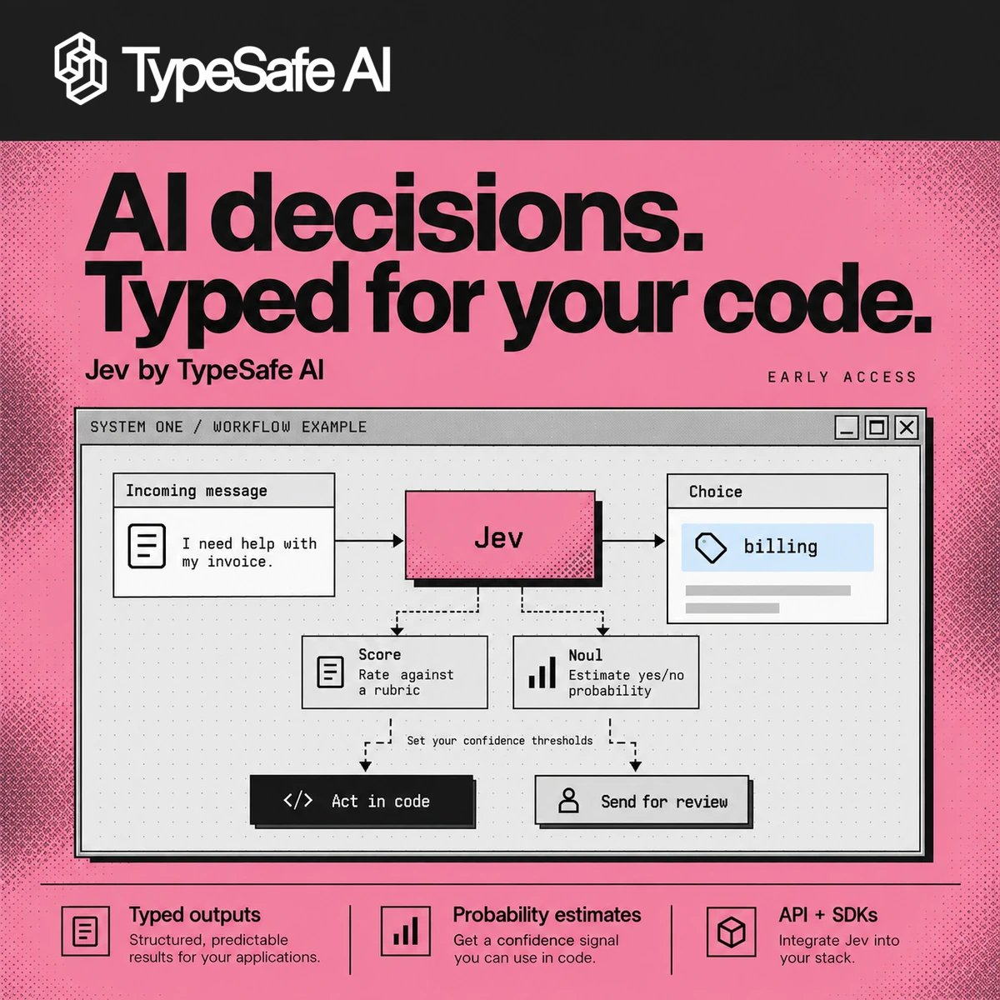
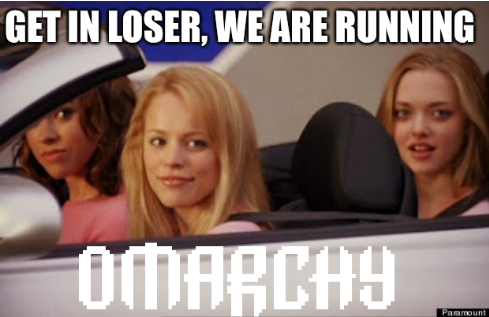
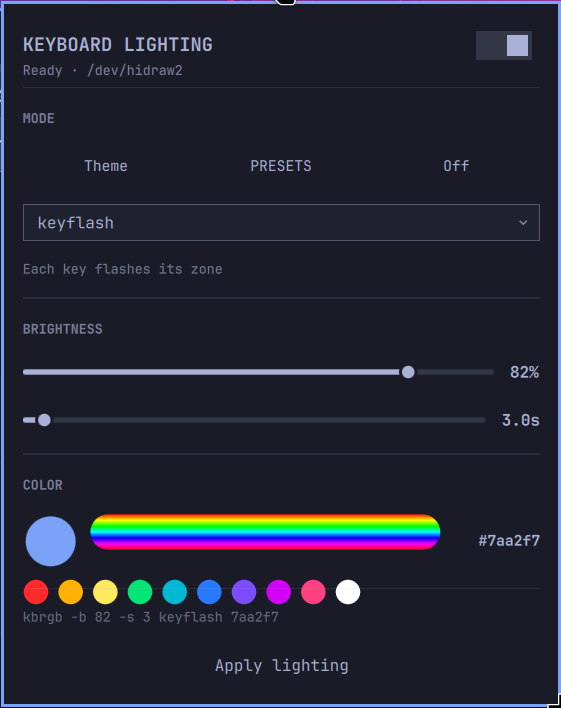

AI Telephone
a game of telephone where every player is a model
Nick “shifty” Underwood
every meetup group chat, ever.
The meetup ends.
The connection stays.
Free group chats for the people you meet in real life.
Two roads to a $0 build
Free cloud models
OpenCode Zen ships free models: no key, no card.
This laptop: 0 credentials configured, 7 free models, and they answer.
Run it locally
Qwen3.5 9B on this laptop’s GPU: $0 per call, and nothing leaves the room.
It’s a player in tonight’s game.
opencode.ai

One app for every agent
on your machine
uses the subscriptions you already have

Tests: 172 passing.
Steer your agents
from anywhere
desktop · web · iOS · Android
open source · t3.codes
“Wait, what are you selling me?”
“Nothing.”

Jev
by TypeSafe AI


A model that never writes text

typed questions in · calibrated probabilities out · ~400 ms · a few thousandths of a cent
TypeSafe’s demo · Jev plays Doom · game state in, typed decisions out
Does Jev have a moat?
madewithjev.com · Sep 22
Some claim to beat it
each project’s own numbers, from its README or launch post
An independent test
49 tasks · 869 cases · zero-shot
jabr/classifier-benchmark
Open wins speed · price · control
Jev wins accuracy · calibrated confidence
A thin moat, and the drawbridge is down.
A second opinion in half a second
Use it for judgments, not as a replacement for reading the code.
npm i -g jev-axigithub.com/shiftynick/jev-axi

tiling · keyboard-first · beautiful by default
I write plugins for it
Agent Quota Bar
My AI agents’ remaining quota, right in the Omarchy bar.
token–life balance, now monitored

kbrgb Keyboard Lighting
Keyboard lighting control, built into the bar.
omarchy.org
Understand AI well enough to use it where you work.
Zero to 100 in plain English.
6 modules · 30 concepts · every concept three ways
all source-linked and verified
aiclaritynetwork.comfree to read · a twice-weekly briefing is in the worksMost apps start 80% built.
built · tested · stable · secure
Great software.
Without the usual tradeoffs.
Software development, rebuilt
New client partnerships opening soon
Thanks.
Nick · shifty
software engineer struggling with token–life balance
afterthat.chat/join/DSAI-072626Nick
a.k.a. shifty
software engineer
token–life balance
status: